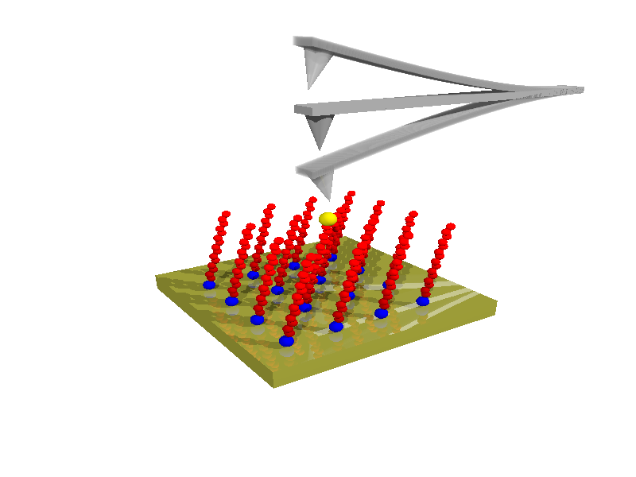
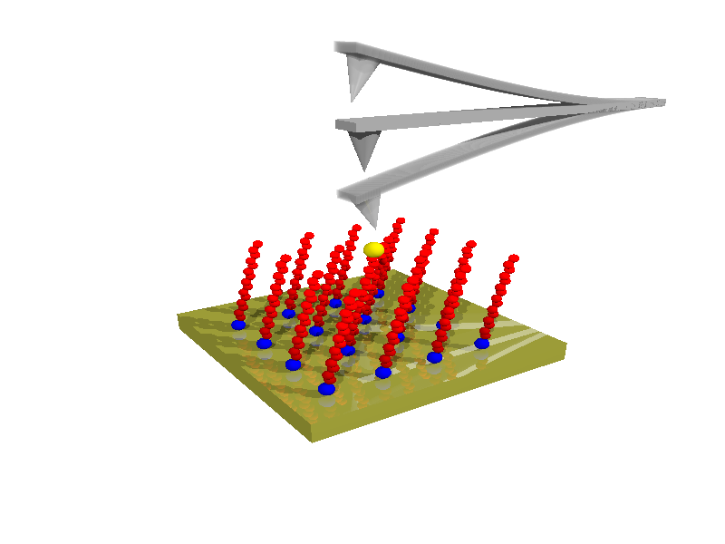
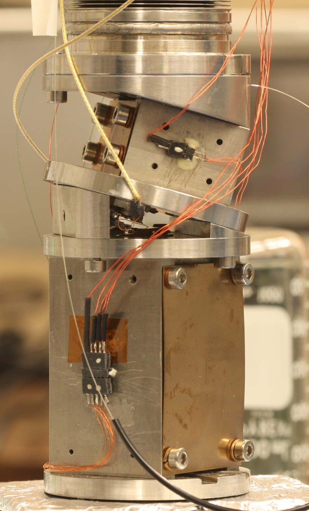
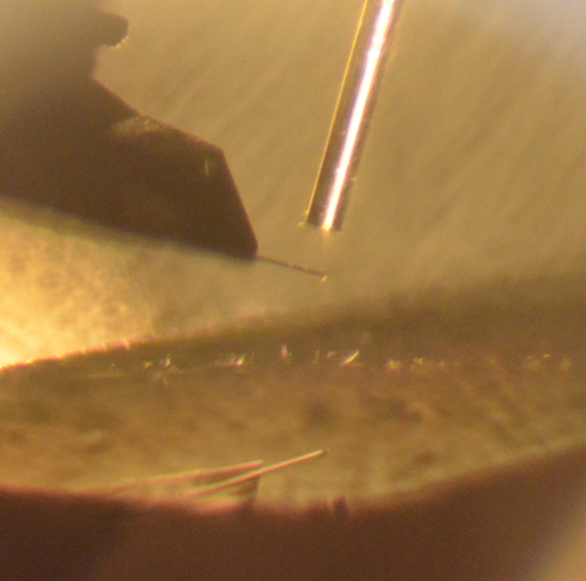

harrisonn griffin
mcgill university, dept of physics
Ernest Rutherford Physics Building,
3600 Rue University,
Montréal, QC H3A 2T8, Canada
T: +1.518. three three eight .5598
griffin dot harrisonn at gmail.com
I perform single electron spectroscopy on self-assembled monolayers
of alkanethiols (SAM) using a home built cryogenic
atomic force microscope.
Some of the thiols are functionalized with ferrocene heads to be used as the redox molecule.

A dc-bias voltage is applied between the oscillating tip and the sample,
leading to an effective ac-voltage between the QD and backelectrode, modulating
their energy level alignments.
At temperatures low enough to observe the Coulomb blockade effect, we can charge the QD electron-by-electron via tunneling.
The tunneling damps the motion of the cantilever, allowing us to perform quantitative energy level spectroscopy.
Some of the thiols are functionalized with ferrocene heads to be used as the redox molecule.

At temperatures low enough to observe the Coulomb blockade effect, we can charge the QD electron-by-electron via tunneling.
The tunneling damps the motion of the cantilever, allowing us to perform quantitative energy level spectroscopy.

